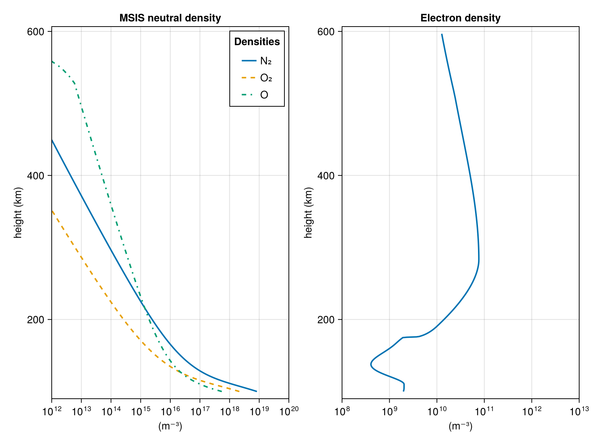
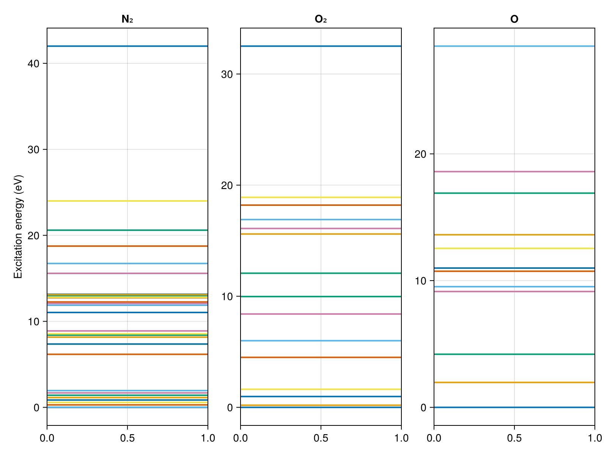
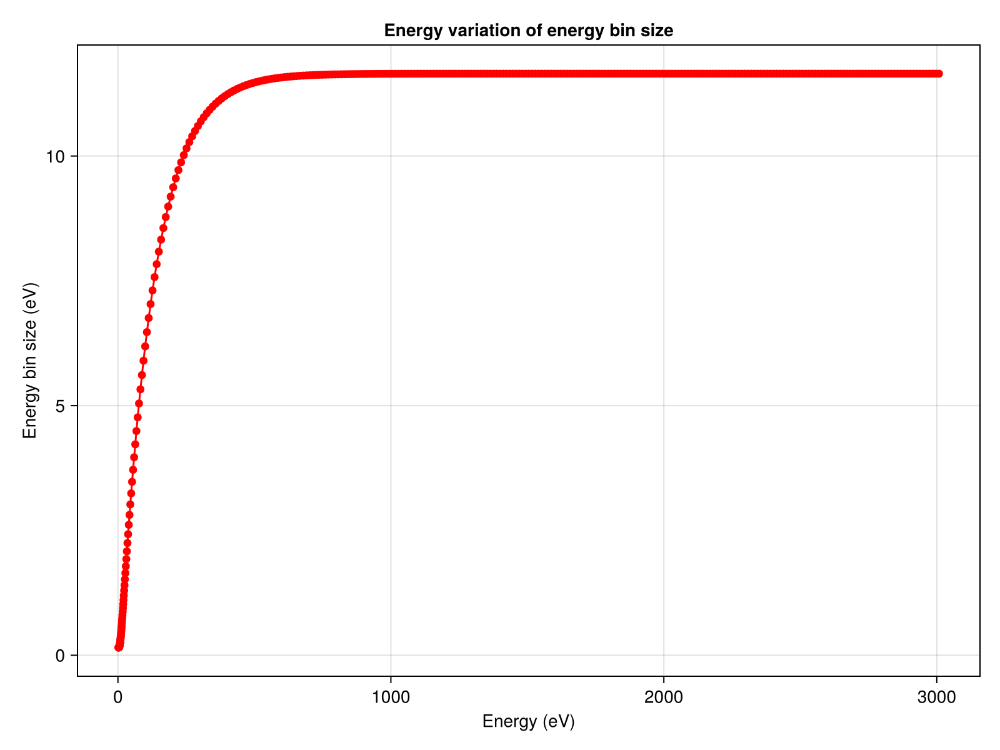
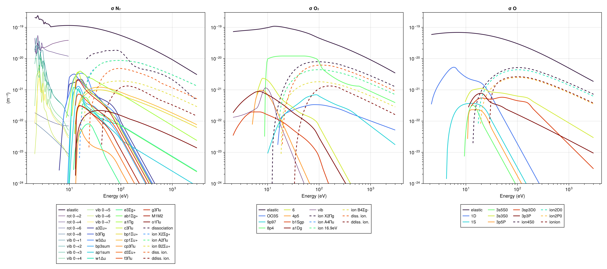
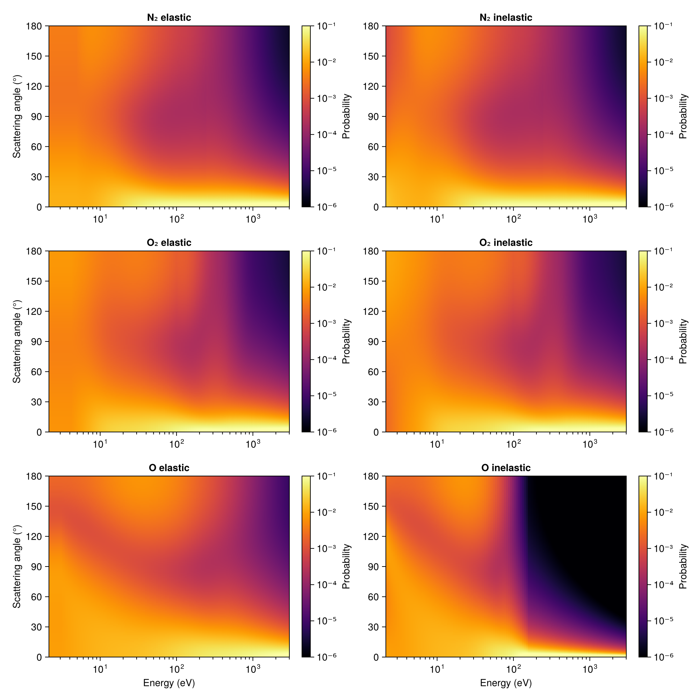
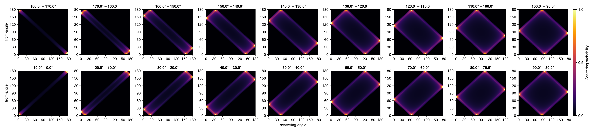

Visualizing the Model
After building an AuroraModel, plot_model can be called to produce a set of diagnostic figures that let you inspect the atmosphere, energy grid, cross-sections, phase functions, and scattering data before running a simulation.
Quick start
using AURORA
using CairoMakie
altitude_lims = [100, 600]
θ_lims = 180:-10:0
E_max = 3000
msis_file = find_msis_file(year=2005, month=10, day=8, hour=22, minute=0,
lat=70, lon=19, height=85:1:700)
iri_file = find_iri_file(year=2005, month=10, day=8, hour=22, minute=0,
lat=70, lon=19, height=85:1:700)
model = AuroraModel(altitude_lims, θ_lims, E_max, msis_file, iri_file)AuroraModel:
├── AltitudeGrid(100.0 - 600.0 km, 410 points)
├── EnergyGrid(2.05 - 3013.81 eV, 337 bins)
├── PitchAngleGrid(18 beams)
├── ScatteringData(18 beams, 720 directions)
├── Ionosphere(410 altitudes)
├── CrossSectionData(337 energies)
└── B angle to zenith: 0.0°Generate all figures at once:
figs = plot_model(model)Dict{Symbol, Makie.Figure} with 6 entries:
:scattering => Scene(19 children, 0 plots)
:energy_grid => Scene(1 children, 0 plots)
:atmosphere => Scene(3 children, 0 plots)
:phase_functions => Scene(12 children, 0 plots)
:energy_levels => Scene(3 children, 0 plots)
:cross_sections => Scene(6 children, 0 plots)Or select specific panels:
figs_subset = plot_model(model; panels=[:atmosphere, :cross_sections])Dict{Symbol, Makie.Figure} with 2 entries:
:atmosphere => Scene(3 children, 0 plots)
:cross_sections => Scene(6 children, 0 plots)Panels
Atmosphere
Neutral density profiles (N₂, O₂, O) from MSIS and the electron density profile from IRI, both interpolated onto the model altitude grid.
figs[:atmosphere]
Energy levels
Excitation thresholds (vibrational, rotational, electronic, and ionization) for each neutral species.
figs[:energy_levels]
Energy grid
Variation of the energy bin width with energy. The grid is finer at low energies and coarser at high energies.
figs[:energy_grid]
Cross-sections
Electron-impact cross-sections for all excited/ionized states of N₂, O₂, and O. Solid lines are excitation states and dashed lines are ionization states. Rotational/vibrational excitations are plotted with thinner lines.
figs[:cross_sections]
Phase functions
The scattering phase functions (elastic and inelastic) show, for each species, the probability distribution for scattering angles as a function of energy.
figs[:phase_functions]
Scattering matrices
Pitch-angle transition probability matrices for each pitch-angle stream. Each panel shows the probability that an electron with an initial pitch-angle "from-angle" will end up in the stream/beam corresponding to the panel, after scattering with an angle "scattering-angle".
figs[:scattering]